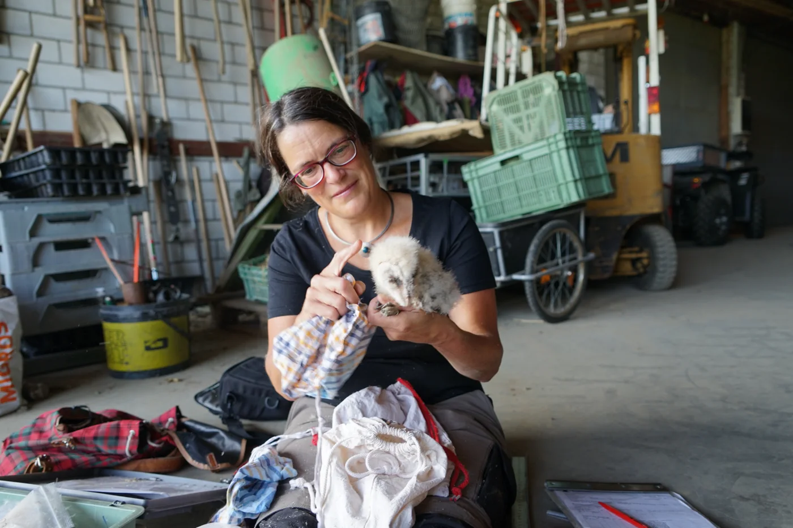
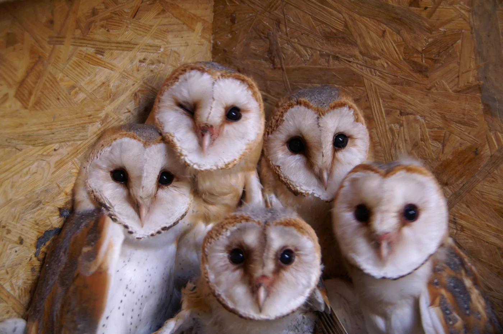
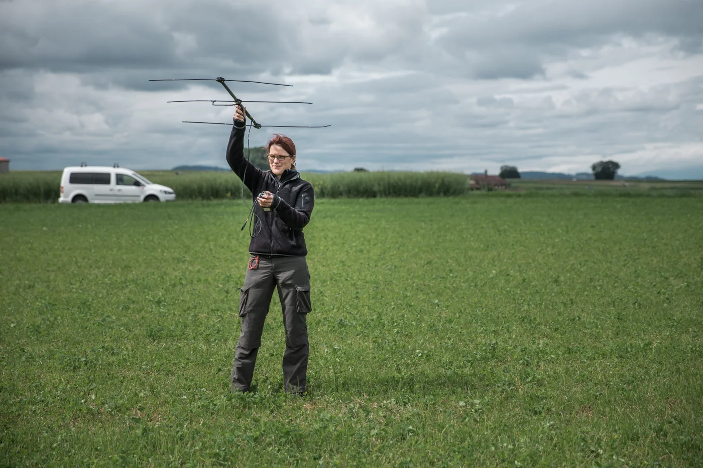
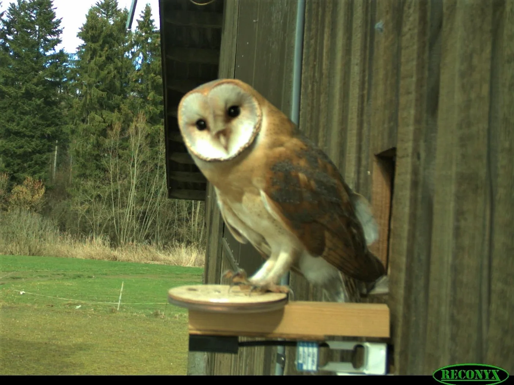
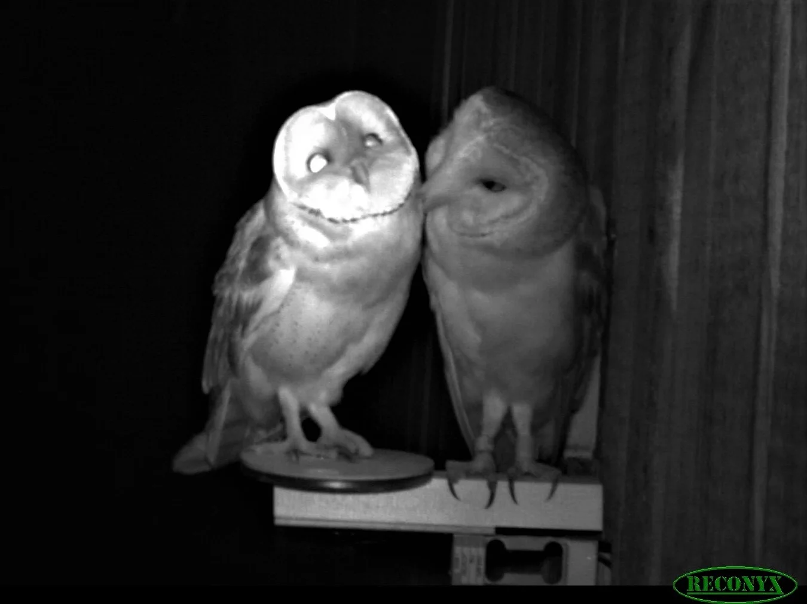
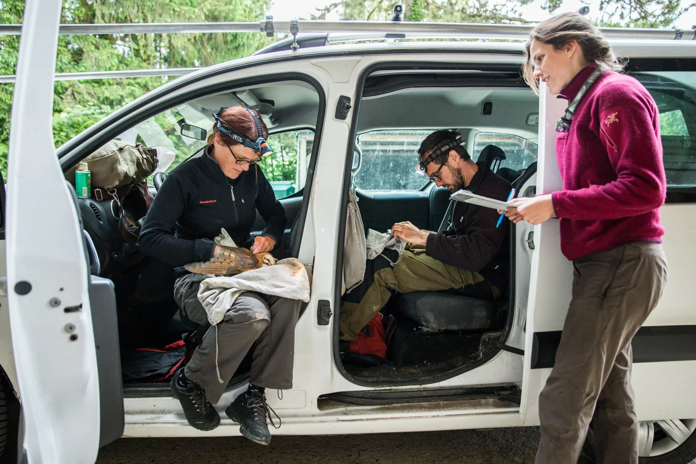
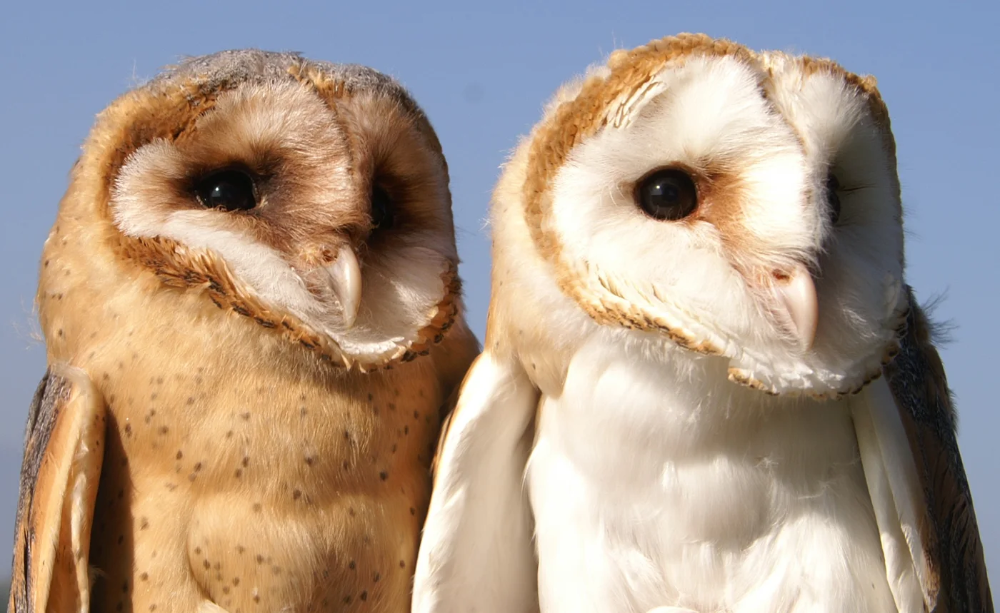

Research to Protect What We Have: Dr. Bettina Almasi, Biologist

“It’s so much easier to protect species than [to] bring them back,” says Dr. Bettina Almasi, a Research Associate at the Swiss Ornithological Institute. Growing up in Switzerland, she was always “wanted to understand more about the processes of nature.” She gravitated to biology over the course of her studies, including a formative summer school experience in California after high school.
At the University of Fribourg, Dr. Almasi enrolled as a history major initially, then changed her major to biology on the first day. After making the switch, she earned a Bachelor’s before continuing on to earn a Master’s and then a PhD at the University of Zürich in collaboration with the Swiss Ornithological Institute. Then, as now, she focused on bird ecology, physiology, and behavior.
Dr. Almasi shows students the growth patterns of a juvenile barn owl. Photo courtesy of Dr. Almasi.

Juvenile barn owls in a nest box. Photo by Dr. Almasi.
Dr. Almasi studies how variable habitat conditions throughout the annual cycle affect barn owls’ fitness. To do so, she uses GPS loggers and a new automatic scale she and her team are developing. The barn owls in the study population have rings with identification chips on their legs. When an owl perches on the scale, the scale reads its identification number and records its weight. With this innovation, the team can measure the owls’ weight and presence at the nest boxes throughout the year without capturing them. The team has deployed 30 such scales at nest boxes so far.

Dr. Almasi uses radio telemetry to study barn owl habitat use. Photo by Lukas Linder.
“We still capture the owls once a year, during the breeding season, to measure size and stress hormone level,” says Dr. Almasi. “These data, together with the habitat use data and the year-round weight measurements, will allow us to target the critical periods when survival probabilities are lowest during the annual cycle. In a next step, we can then develop adequate conservation measures.”


Barn owls perch on the automatic scales by day (top) and night (bottom). Photos by the Swiss Ornithological Institute.
The type of work Dr. Almasi does generates a lot of data, which can be challenging. “It’s very important to have a passion for data,” not to mention patience. Analyzing blood in the laboratory for stress hormones can itself prove stressful. Another challenge is studying night-active birds’ habitat use, “as the size of battery-powered loggers is still just small enough for barn owls.” This means “it is difficult to get adequate data resolution and to complete the annual cycle of habitat use.” She hopes that lighter measurement devices with longer battery lives will be developed soon.

Dr. Almasi and her team mount a GPS logger on a barn owl. Photo by Lukas Linder.
Dr. Almasi enjoys working with students and field assistants, “seeing how they understand species and develop their own ideas.” Bringing people together is inspiring, and collaboration is a crucial skill. While curiosity about natural processes is essential, “science is, at the end, all about people…without my students, collaborators, and field assistants, or the farmers who gives us access to their barns to mount nest boxes, I could not do what I do.”
During her PhD studies, Dr. Almasi “was surrounded by very enthusiastic and motivated people.” Their enthusiasm and positivity made her stay in science, she says, and she learned a lot from them. These supervisors and peers exemplified the type of supportive scientific environment she fosters now.

Barn owls. Photo by Dr. Almasi.
Dr. Almasi learned how to lead a group by doing so. She advises science students to start taking classes in project and team management early, to prepare for the tasks to come. She also urges students and early career scientists to be self-secure, for example, when asking for what they need in terms of flexibility around family responsibilities. “Many don’t dare to ask,” she says, but self-assurance is paramount.
While Dr. Almasi deals with massive amounts of data already, she anticipates that current trends in open data and open science will lead to new data management challenges in the future. Her next step in the barn owl project will be developing new scale units to mount on all 300 nest boxes in her study area. Noting that most of her measurement devices are solar-powered, she suggests with a smile that lunar-powered ones would be ideal. This calls to mind “the kind of hope that flies on silent wings under a shining Owl Moon.”[1]
*Thank you to Dr. Bettina Almasi for sharing her story with 500WS Bern-Fribourg. Click here to find out more about her experience.
Gabrielle Vance
M.Sc. Geology
----------------------------------------------------------------------------------------------------------------------------------------------------
[1] Jane Yolen’s beloved children’s book Owl Moon.
From the 500 Women Scientists Bern-Fribourg archive. Originally published 7 October 2021.
Explore more stories